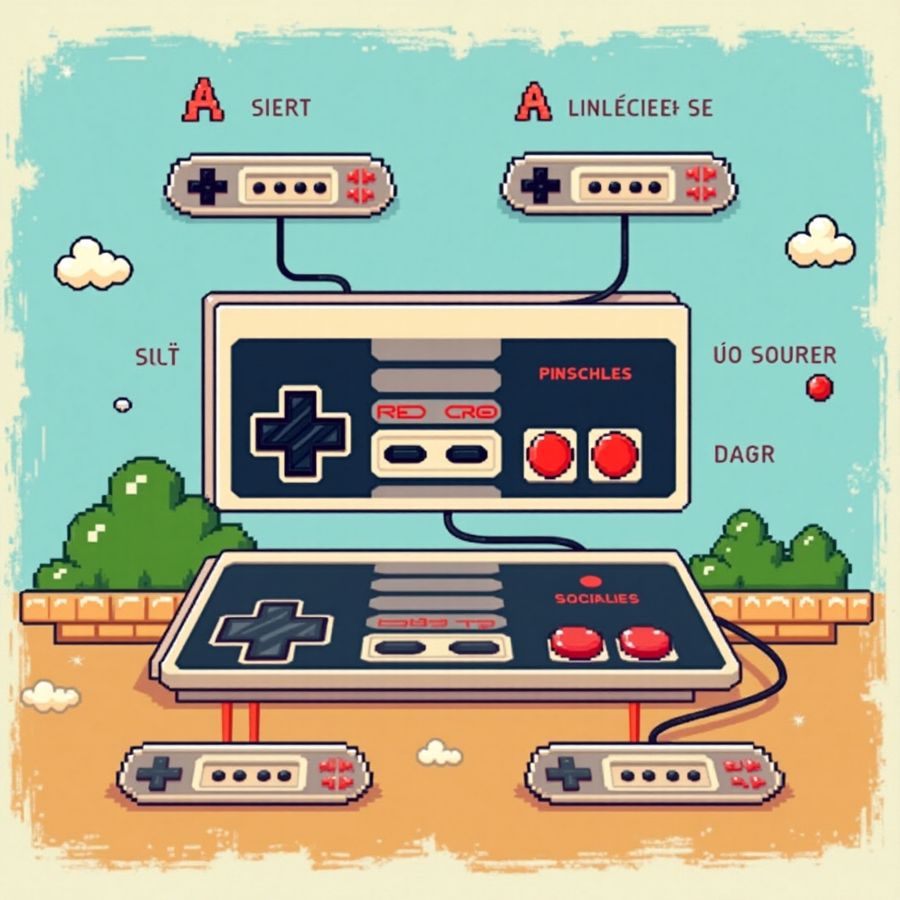
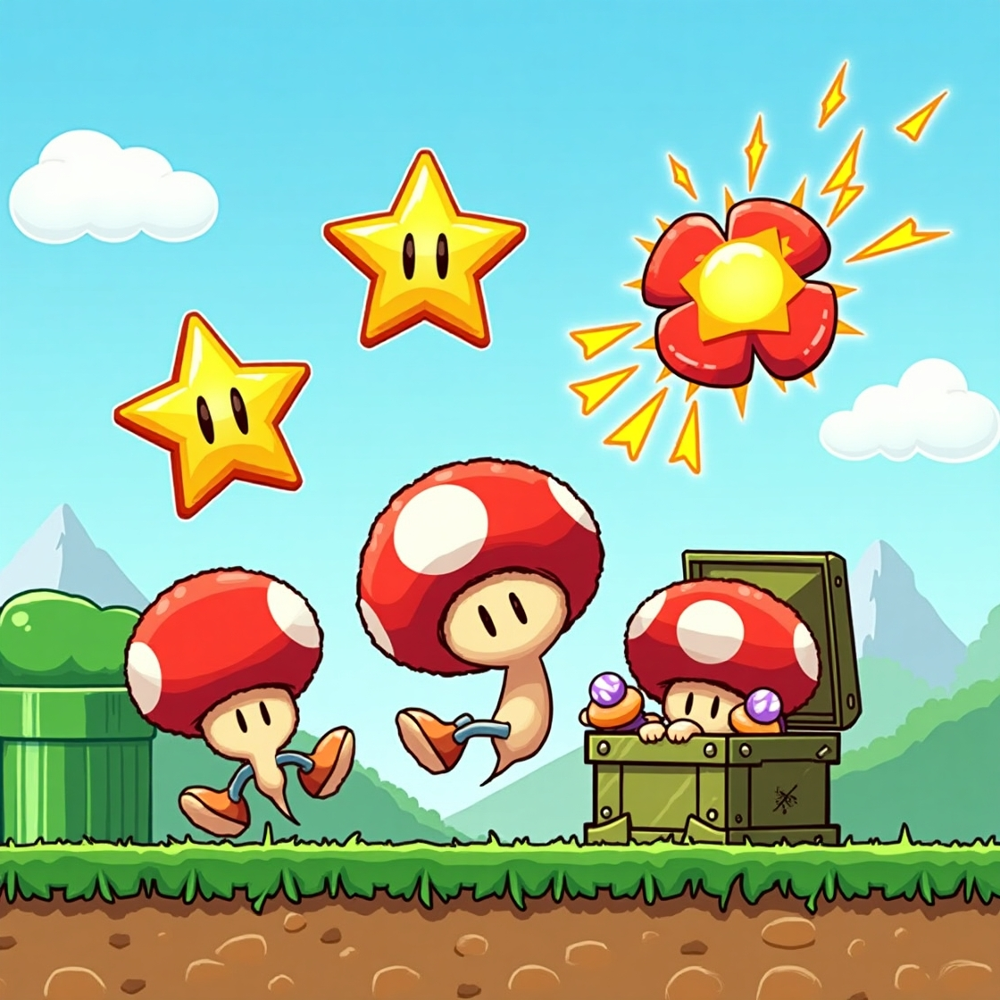
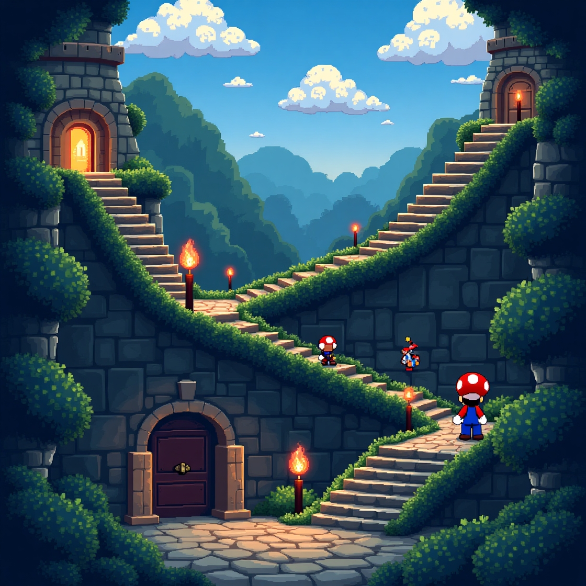

🎮 Contrôles de Base
Utilisez les touches directionnelles pour vous déplacer, A pour sauter et B pour courir. Maîtrisez ces commandes pour traverser les niveaux avec succès.

Plongez dans l'univers de Super Mario Bros et découvrez les mécaniques de jeu qui ont rendu ce titre légendaire. Que vous soyez un nouveau joueur ou un vétéran, cette section vous guidera à travers les bases du gameplay.
Utilisez les touches directionnelles pour vous déplacer, A pour sauter et B pour courir. Maîtrisez ces commandes pour traverser les niveaux avec succès.

Collectez des champignons pour grandir, des fleurs pour lancer des boules de feu et des étoiles pour devenir invincible.

Explorez chaque niveau pour découvrir des passages secrets, des pièces cachées et des warp zones pour sauter des mondes.
